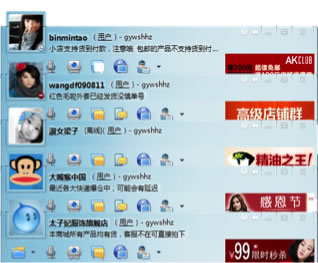

Background
During the summer of my junior year, I was fortunate to work as an intern looking at user research with Taobao, China's largest e-commerce website, owned by Alibaba. My job was to work with my teammates to enhance the design of an advertising platform called Zhitongche (similar to adwords of Google),which helps users to advertise their products and and make their products appear in the first result page.
The product manager found that many sellers entered into the advertising system and had tried for a long time, but they didn't really charge money into it and use it to promote their products. So the product manager was wondering that whether the system was difficult to use and understand.
Step 1: Discussion
At first, we disscussed the research methods, the arrangement, the way to recruit interviees and so on. Finally, we decided to use usability testing and user interview to slove problems. The whole research was last about one month, because it is not easy to find those sellers , especially who was in Hangzhou.
Step 2: Material Preparation
I wrote a Usability Test Plan (test assignments & testing processing ) while the outline of interview was wrote by my colleagues.
We gave users three tasks to do. The first one was to let him promote two products by his own account,and we want to see if there are some problems in a promoting process. The second one was to let him see the promote results in our account and to test if he can understand those data easily. The third tasks was to let him justify his promoting strategy according to the results he saw in task two.
Step 3: Online Interview
At first, we got a user list from the customer service. Those users consulted some questions about Zhitongche and left their Aliwangwang ID ( Aliwangwang is one type of IM software) and mobile phone number. Then we contacted them on Aliwangwang to see whether they have solved their problem and decided if they suit for our interview. Finally, we invited 5 persons to take part in our activity.

Step 4:Face to Face Interview and usablity testing
5 persons came to our company and finished the interview. The whole process as follow:

Step 5: The Report
After All, I collected the results of the usability testing and my colleagues wrote the whole reports.
After this project, I commanded some basic skills of user interviews and usablity testing. And also, because of this project, I understand the role of user experience research in an Internet Company.